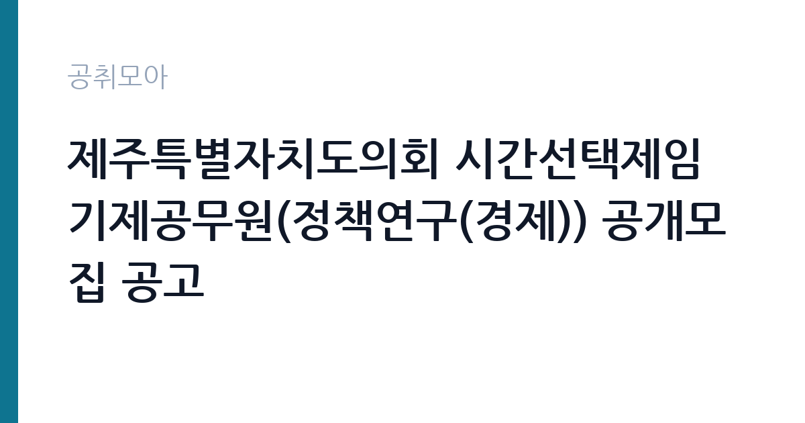

[지자체] 제주특별자치도의회 시간선택제임기제공무원(정책연구(경제)) 공개모집 공고
제주특별자치도 의회사무처 · 제주 · 마감 2026-11-03 (D-13) · 출처 나라일터

한눈에 보는 모집 조건
| 기관 | 제주특별자치도 의회사무처 |
|---|---|
| 공고명 | 제주특별자치도의회 시간선택제임기제공무원(정책연구(경제)) 공개모집 공고 |
| 고용형태 | 임기제 |
| 근무지 | 제주 |
| 게시일 | 2026-10-21 |
| 마감일 | 2026-11-03 (D-13) |
지원자격, 이렇게 읽으세요
- 시간선택제임기제나급 1명
- 접수 ~2026-11-03 마감
- 세부 조건은 원문 공고문 확인
임기제공무원은 공무원 신분이지만 임용 기간이 정해져 있습니다. 전문성이 필요한 업무에 채용되며 임용 기간과 연봉등급이 공고문에 명시됩니다. 임기 중에는 공무원으로서의 복무 규정과 이해충돌 방지 의무가 적용됩니다. 이번 공고는 제주특별자치도 의회사무처에서 직접 진행하는 자체 전형으로, 응시자격과 제출서류는 공고문에 항목별로 제시됩니다. 연구직은 전공과 학위가 가장 중요한 기준입니다. 석사 이상을 요구하는 공고가 많고, 특정 전공을 명시하는 경우에는 유사 전공 인정 범위를 확인해야 합니다. 관련 분야 연구 경력과 논문 실적을 우대하며 실적은 증빙 자료로 제출해야 합니다. 연구 과제 참여 이력과 데이터 분석 도구 활용 능력도 평가 대상입니다. 채용 조건과 처우는 공고문에 명시되어 있으므로 원문을 확인하십시오. 서류는 접수 마감 이후 보완이 되지 않으므로 자격 요건과 증빙 서류를 마감 전에 모두 갖춰야 합니다. 공고문에 명시된 우대 사항은 해당 여부를 확인해 증빙을 첨부해야 가점이 반영됩니다. 경력 요건은 총 경력이 아니라 해당 직무 경력만 인정하는 경우가 있으니, 증명서의 직무 기술을 함께 확인하십시오.
이 공고의 포인트
이 공고의 첫 번째 포인트는 고용 형태입니다. 임용 기간이 정해져 있지만 공무원 신분으로 복무 규정이 적용되고, 전문성이 인정되면 재임용이나 유사 직위 지원에 도움이 됩니다. 두 번째는 업무 범위가 명확하다는 점입니다. 연구직 직무로 채용되므로 배치 이후 담당 업무가 크게 흔들리지 않습니다. 세 번째는 근무지입니다. 제주 지역 근무로 수도권 공고에 비해 지원자 분포가 넓지 않아 상대적으로 경쟁이 분산되는 경우가 있습니다. 접수 기간이 길지 않아 서류 준비와 자격 확인을 동시에 진행해야 합니다. 같은 직무로 함께 올라온 공고 10건 가운데 마감이 중간에 위치하므로 다른 공고와 일정이 겹치는지 확인하십시오. 다만 선발 인원이 1명으로 많지 않아 자격을 갖춘 지원자가 몰리면 경쟁률이 높아질 수 있습니다.
전형은 어떻게 진행되나
채용 절차는 공고문에 안내된 순서대로 진행되며, 서류 접수 마감 후에는 추가 접수나 서류 보완이 이뤄지지 않는 것이 원칙입니다. 서류심사에서는 응시자격과 제출서류의 형식 요건을 기계적으로 확인하므로, 경력 증명서의 기간과 직무 내용이 공고의 요건과 정확히 맞아야 합니다. 면접은 지원자 수에 따라 집단면접과 개별면접으로 나뉘고, 직무 관련 질문과 상황 대응 질문이 함께 나옵니다. 합격자 발표는 개별 통보 또는 홈페이지 게시로 이뤄지며 이후 임용 절차가 진행됩니다. 자격증 취득 예정자로 지원했다면 취득 증명 제출 기한을 반드시 지켜야 합니다.
원문에서 확인한 전형 방식
○ 모집분야 : 정책연구(경제) ○ 선발직급 : 시간선택제임기제 나급 ○ 자격요건 : 붙임 참조 ○ 접수기간 : 2026.10.30.~11.3. ○ 응시방법 : 방문접수 또는 우편접수(빠른등기) ○ 문의처 : 064-741-1892 ※ 기타 자세한 사항은 붙임 파일 참조바랍니다.
이런 분께 추천해요
- 관련 전공 석사 이상 학위를 가진 분
- 연구 과제 수행과 보고서 작성 경험이 있는 분
- 데이터 분석 도구를 실제로 활용할 수 있는 분
지원 전 체크리스트
- 응시자격 요건과 경력 기준을 충족하는가 — 경력은 증명서로 입증해야 합니다
- 임용 기간과 연봉등급, 근무 시간 조건을 확인했는가
- 제출서류 목록을 모두 준비했는가 — 누락 시 서류 단계에서 탈락합니다
- 접수 마감 2026-11-03 이전에 접수 방식을 확인해 제출했는가
모집 일정과 제출 타이밍
공고 게시일은 2026-10-21, 접수 마감은 2026-11-03입니다. 준비 기간은 약 13일로 서류 준비와 자격 증빙을 함께 처리하기에는 넉넉하지 않은 편입니다. 첫 이틀 안에 공고문과 첨부 서식을 내려받아 요건을 확인하고 남은 기간에 증빙 서류를 발급받는 일정이 현실적입니다. 면접은 서류 합격자 발표 후 짧은 간격으로 진행되는 경우가 많으므로 서류 제출과 동시에 면접 준비를 시작하는 편이 안전합니다. 마감일에는 접수 시스템이 몰리므로 하루 전까지 제출을 마치는 것이 좋습니다. 마감 이후에는 어떤 사유로도 접수가 인정되지 않으므로 하루 전 제출을 목표로 하십시오. 제주 근무지는 도내 이동 거리가 길고 숙소 제공 여부가 총비용에 큰 영향을 줍니다. 마감까지 2주 안팎이 있어 준비할 시간은 있지만 미루면 촉박해집니다. 선발 인원이 한두 명 수준이라 지원자 개개인의 서류 완성도가 그대로 평가에 반영됩니다.
직무 이해하기: 지자체
지방의회는 조례 제정과 예산 심의, 행정 감시를 수행하는 의결기관입니다. 의원을 보좌하는 정책지원 인력과 회의 기록 인력을 별도로 두고, 회기 중에는 업무량이 크게 늘어납니다. 연구직은 정책이나 기술 과제를 설계하고 데이터를 수집·분석해 결과물을 만드는 일을 합니다. 문헌 검토와 조사 설계, 통계 분석, 보고서 작성이 기본 주기이고 과제에 따라 현장 조사나 실험이 붙습니다. 연구 결과를 논문이나 정책 제안으로 정리하고 대외 발표와 학술 교류도 업무에 포함됩니다. 계약 기간이 정해진 과제 기반 채용이 많아 수행 과제와 성과 목표를 입사 초에 확정하는 경우가 일반적입니다. 업무는 혼자 처리하기보다 부서 단위로 나눠 진행되므로 담당 구역과 협업 범위를 입사 초에 확인하는 것이 중요합니다. 현장 업무와 사무 업무의 비중은 기관의 사업 일정에 따라 계절별로 달라집니다.
자기소개서 작성 팁
연구직 지원서는 연구 역량을 구조적으로 보여줘야 합니다. 수행 과제, 사용한 방법론, 도출한 결과와 기여도를 한 문단씩 정리하십시오. 지원 기관의 사업과 본인 연구를 연결하는 부분이 특히 중요합니다. 채용 후 하고 싶은 연구 주제를 구체적으로 제시하면 준비도가 드러납니다. 구성은 지원 동기, 직무 경험, 기여 방안 순서가 무난합니다. 지원 동기는 제주특별자치도 의회사무처의 사업 중 본인이 관심을 가진 부분을 한 가지로 좁혀 서술하고 추상적인 표현은 줄이십시오. 직무 경험은 담당했던 업무와 규모, 결과를 수치로 제시하면 설득력이 올라갑니다. 기여 방안은 입사 후 첫 3개월과 1년 계획으로 나눠 쓰면 준비도가 드러납니다.
면접 준비 포인트
면접은 연구 경험과 방법론에 대한 질문이 중심입니다. 본인이 수행한 연구에서 가설을 어떻게 세웠고 어떤 방법으로 검증했는지 구체적으로 답해야 합니다. 연구 결과가 실제 정책이나 사업에 어떻게 쓰일 수 있는지 묻는 질문도 자주 나옵니다. 사용 가능한 분석 도구와 데이터 처리 경험을 명확히 밝히십시오. 답변은 상황, 판단, 조치의 순서로 정리하면 전달이 분명해집니다. 모르는 질문에는 모른다고 밝히고 확인 방법을 제시하는 편이 억지 답변보다 낫습니다. 마지막에는 근무 의사와 함께 2026-11-03 이후 일정에 언제든 응할 수 있다는 점을 전달하십시오. 본인 경험을 말할 때는 기간, 역할, 결과를 순서대로 정리해 두면 질문이 바뀌어도 활용할 수 있습니다.
급여·근무조건 읽는 법
연구직의 보수는 채용 신분에 따라 크게 달라집니다. 공공기관 연구직은 기관의 연봉제 또는 직급별 임금표를 적용받고, 계약직 연구원은 계약 기간과 연봉 총액이 개별로 정해집니다. 과제 기반 채용은 인건비 예산 범위에서 연봉이 결정되므로 동일 직급이라도 과제에 따라 차이가 납니다. 2026년 최저임금은 시급 10,320원, 월 환산 2,156,880원입니다. 구체적인 금액과 성과급 조건은 공고문에서 확인하십시오. 2026년 적용 최저임금은 시급 10,320원, 월 환산 2,156,880원(주 40시간·209시간 기준)입니다. 고용노동부 고시 제2025-47호로 확정된 금액입니다. 공고문에 금액이 제시되지 않은 항목은 원문 보수표나 처우 설명에서 확인해야 하며 확인되지 않은 수치는 쓰지 않는 것이 원칙입니다. 비교할 때는 월 급여뿐 아니라 상여·명절휴가비·복지포인트·초과근무수당까지 포함한 연간 총액으로 계산하십시오. 기간제라면 계약 기간 동안의 총액을, 무기계약이라면 호봉 상승과 정년까지의 누적 소득을 기준으로 판단하는 편이 정확합니다.
자주 묻는 질문
- 선발 인원은 몇 명인가요?
공고문 기준 1명입니다. 직종별로 인원이 나뉘는 경우가 있으니 모집분야 항목을 함께 확인하십시오. - 근무지는 어디인가요?
제주 지역의 제주특별자치도 의회사무처 소속 근무지입니다. 세부 주소와 출퇴근 조건은 원문 공고문에서 확인할 수 있습니다. - 보수는 얼마인가요?
채용 신분(임기제공무원)과 기관 임금 규정에 따라 정해지며 구체적인 금액은 공고문 처우 항목에 제시됩니다. 금액이 공개되지 않은 경우에는 원문의 보수표를 확인하십시오.
함께 보면 좋은 공고
[지자체] 서울특별시 영등포구 시간선택제임기제공무원(마급, CCTV 관제요원) 채용 시험 공고 — 마감 2026-11-05[지자체] 2026년 제10회 경기도 임기제공무원 임용시험 공고 — 마감 2026-11-04[지자체] 2026년 제3회 경기도 개방형직위 임용시험 공고 — 마감 2026-11-06출처: 나라일터 공개정보를 바탕으로 공취모아가 정리한 안내글입니다. 모집 조건·일정은 변경될 수 있으니 지원 전 반드시 원문 공고문을 확인하세요. 본 글은 정보 제공용이며 합격을 보장하지 않습니다.